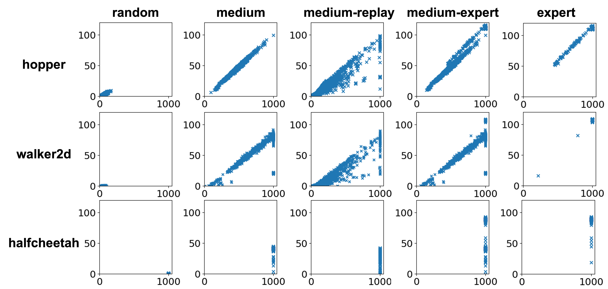

[TL;DR] Surprisingly, offline RL can produce good policies even when trained on “wrong” reward labels. Here is why it happens and why it matters!
The Surprising Findings
Offline RL can learn good policies with "bad" rewards
Below we show the learned policies by ATAC (Cheng et al. 2022), a state-of-the-art offline RL algorithm, on different variations of the
hopper-medium-v2
dataset from a popular offline RL benchmark called D4RL (Fu et al. 2020). The goal of hopper is to move forward as fast as possible while avoiding falling down. Surprisingly, ATAC can learn good policies not only with the well-designed true reward (Original Reward), but also with "bad" rewards that are uninformative or misleading, for example, constant zero reward (Zero Reward), reward randomly sampled from a uniform distribution (Random Reward), and even the negation of the true reward (Negative Reward). Moreover, the learned policies differ qualitatively to the behavioral policy (Behavior Policy) which is used for data generation, showing that this is not a result of simple imitation.
Behavior Policy

Original Reward

ZeroReward

Random Reward

Negative Reward

This is not unique to a single dataset or algorithm
We train a total of around 16k offline RL agents across 30 offline datasets with 5 offline RL algorithms, and observe similar phenomenon of various degree for most of them (please see the paper for results). In the paper, we also formally show that 9 offline RL algorithms can provably achieve such an effect given certain offline data.
Below we show the normalized score of policies learned by ATAC on 15 D4RL locomotion datasets. For most hopper-*-v2 and walker2d-*-v2 datasets, we observe that ATAC with "bad" rewards can attain notably higher score than behavior policies. For all *-expert-v2 datasets (denoted as exp in the figure below), including halfcheetah-expert-v2, ATAC can achieve expert-level performance even with "bad" rewards. Results from other offline RL algorithms and datasets can be found in the paper.
The Explanations
This surprising robustness property of offline RL algorithms is attributable to an interplay between pessimism, a underlying design principle of many offline RL algorithms, and certain implicit biases in common data collection practices.
-
Explanation part 1: Offline RL has survival instinct
Pessimism endows offline RL agents with a survival instinct
Offline RL algorithms commonly use the idea of pessimism to deal with distribution mismatch. Pessimism actually gives offline RL algorithms a property which we call it survival instinct. In other words, with the learned policy, the agent would seek to stay within data support in the long term.
Formally, we show that offline RL algorithms approximately solve an implicit constrained MDP, where the constraints are defined by the offline data support. This new theoretical finding tells us that the behavior of offline RL algorithms is determined by two factors, 1) the more obvious return maximization and 2) our newly discovered survival instinct. Moreover, survival instinct sometimes can override the behavior of return maximization. This is why we observe that there is no qualitatively difference between policies learned with different rewards for
hopper-medium-v2above.Offline RL is inherently safe with safe offline data
A direct implication of offline RL's survival instinct is that offline RL is inherently safe RL if the offline data distribution only contains safe states. Note that it does not require the behavior policy itself to be safe. We can see this from the
hopper-medium-v2policies shown above. Despite that the behavior policy is not safe, i.e., the hopper falls under the behavior policy, the offline data distribution is actually safe because a data trajectory ends immediately when the hopper is about to fall. Because of its survival instinct, offline RL manages to learn safe policies even with the negative reward which penalizes staying alive.Our notion of inherent safety of offline RL differs from offline constrained RL, which focuses on learning safe, i.e., constraint satisfying, policies from both safe and unsafe offline data. Our results show that we can use offline RL to learn safe policies if the offline data are safe data only. This can be more suitable for situations where collecting unsafe data is expensive, infeasible, or unethical. Moreover, in the paper, we show that running offline RL on the safe portion of several offline safe RL benchmark datasets (Liu et al. 2023) works as well as specialized algorithms which use the full dataset containing both safe and unsafe data.
-
Explanation part 2: Offline data has positive bias
On the other hand, we observe that offline data often has certain positive bias. Survival instinct in this case can then directly imply high policy performance.
There are multiple sources of positive data bias
Offline data can have different properties which lead to positive bias. One example is length bias, i.e., data trajectories are longer if their performance is closer to optimal. Another example is expert bias, which is induced by when the behavior policy is optimal (or deterministic and near-optimal). We discuss a few more examples of positive data bias in the paper.
Benchmark datasets can have positive bias
Most D4RL locomotion datasets have length bias. In the figure below, we visualize each trajectory in D4RL datasets as a point, with its x-coordinate being trajectory length and y-coordinate being normalized score. For most datasets, there is a strong positive correlation between trajectory length and normalized score. Moreover, if we compare the figure below with the bar graph of normalized scores above, we can see that offline RL is not sensitive to reward when there is a strong correlation between trajectory length and performance, and vice versa (for example, for all
*-medium-replay-v2datasets). All D4rl*-expert-v2datasets have expert bias, which explains why offline RL can achieve good performance with different rewards for these datasets.Positive bias can be naturally induced by common data collection practices
Positive bias is not just specific to D4RL datasets. In fact, positive bias can be naturally induced by common data collection practices. Let's take length bias again as an example. During data collection, performance-based interventions often happen. When the agent is clearly not making progress toward the task, it is quite common to stop and reset the agent. This is because we often have a limited time budget for data collection. And this would imply that data trajectories are usually longer if their performance is good. Similarly, safety-based interventions often exist during data collection, ensuring that offline data distribution is safe (even when the behavior policy is not safe).
Positive bias in data can be empirically quantified
In the paper, we provide a metric to empirically estimate the amount of positive data bias based on the performance of an offline RL algorithm under different rewards. Below we show the estimated positive bias in D4RL locomotion datasets with respect to ATAC. We encourage the community to compute this estimated positive bias when interpreting results of future offline RL algorithms and when releasing future offline RL benchmarks.
Implications
-
Offline RL shouldn’t be evaluated like online RL
The behavior of offline RL depends on both reward and data distribution. Care should be taken when interpreting results on current benchmarks and when designing new offline RL benchmarks. We encourage the community to empirically estimate the amount of positive bias using the metric proposed in our paper.
-
Offline RL is safe RL
When offline data is safe, offline RL can inherently learn safe policies. Offline RL can be a valuable tool for safe RL in scenarios where collecting safe data is relatively easy while collecting unsafe data is expensive, unethical or infeasible.
-
We need to rethink about the effect of reward in offline RL
Offline RL can succeed with weak or no reward signals. When offline data has positive bias, offline RL may be applied to domains where reward labeling is expensive or infeasible. At the same time, offline RL (even with correct reward) may suffer from undesirable bias implicitly in data.
-
What is not included in data is as important as what is included
Learning from diverse data requires high-quality reward. It can be interesting future work to explore how to purposely collecting data with positive bias, e.g., through intervention, such that offline RL can work with weak or no reward signals.